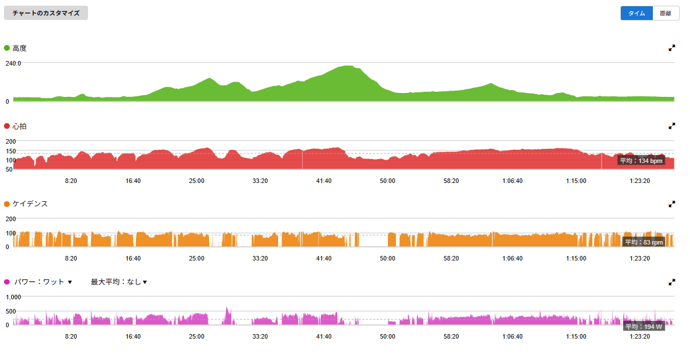
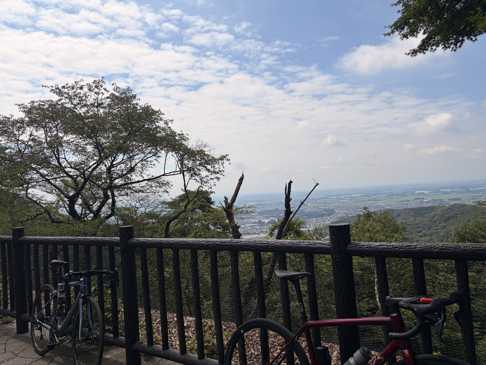

外ゴルビー、SST、そして太平。3日目でも坂を踏めた日
外ゴルビー5本、ローラーSST20分×2相当。その翌日に、太平へ行った。正直、この流れで3日目にどこまで踏めるかは少し分からなかった。
ただ、ここで最初から軽めに寄せすぎるのも違う気がした。今日のテーマは「坂はON、下りはOFF、それ以外はテンポ」。全部全力ではないけれど、狙ったところではちゃんと踏む。疲労管理を言い訳にしない日の実験である。

3日目に太平へ行った理由
ここ2日間は、かなり濃かった。1日目は唐沢で外ゴルビー。5分走を5本、2日目はローラーでSST20分×2相当。
普通に考えれば、3日目は流してもいい。でも最近の私は、練習内容が甘くなりがちなのを少し警戒している。富士ヒルで一応ゴールドを目指すなら、踏める日にちゃんと踏むことも必要だと思った。
坂ON、下りOFF、それ以外テンポ
今日の狙いは、坂だけ頑張って終わることではなかった。登りはON、下りはOFF、平坦やつなぎはテンポ。これなら強度は入るし、無駄な踏みすぎも少し抑えられる。
結果は40.70km、1時間26分、獲得標高481m。平均パワー194W、TSS125.0。75kg基準だとNPは約3.43W/kgになる。昨日の外ゴルビーに近い負荷で、今日も軽く流した日ではなかった。
平均気温は30.2℃で、最高気温は35℃。数字だけでもしっかりしているが、気温を考えるとさらに地味にきつい。こういう日は、爽やかな写真だけ見て判断してはいけない。

太平で踏めた主要区間
今回の太平コースはいつもの流れ。
下皆川街道は2分24秒で平均369W。下皆川街道の上り返しは46秒で平均463W。短い登りは、ちゃんとONにできた。
太平山は7分15秒で平均316W、NP323W。ここが今日の中心だった。さらに個人的に大きかったのは、帰りのストレートで16分39秒、平均282W、NP287Wを出せたこと。登りで踏んで終わりではなく、帰りもちゃんと踏めたのはかなり良い。

外だと体全体で踏める
ローラーはローラーで大事だ。狙ったパワーを出す時、ペダルを回すことだけに集中できる。SST20分×2みたいなメニューには本当に向いている。
でも外は外で別の良さがある。体全体を使って走っている感じ。登りで体を動かして踏む感じ。風や路面に合わせながら頑張る感じ。単純に気持ちがいいし、頑張れる。
今日は苦しいところは苦しかったが、心肺が完全に破綻した感じではなかった。平均心拍は134bpm、最大心拍167bpm。心拍ゾーン5は0分だったので、追い込み切ったというより、全体にしっかり負荷を入れた日だったと思う。
耐久値が上がった気がする
今日の体感で一番大きかったのは、疲れたけど、まだ余裕がある感じだったこと。太平を走って、登りで踏んで、帰りも16分以上踏んで、疲れていないわけがない。
それでも帰宅後にこうしてPCに向かって、まだ体に余裕がある感じがあった。以前なら、同じような内容をやった後はもっとダメージが残っていた気がする。今日はきつかったけど、受け止められる量が増えた感じがある。
言い方を変えると、耐久値が上がった感じ。5分の高出力が出る。20分SSTができる。太平で坂ONができる。それ以上に、踏んだ後に体が壊れにくくなっている感覚がある。富士ヒルを考えると、これはかなり大事だと思う。
3日間でかなり積めた
ここ3日間を並べると、外ゴルビー5本がTSS124.6、ローラーSST20分×2相当がTSS74.7、今日の太平坂ON＋テンポがTSS125.0。合計で約324TSSになる。
これはさすがに甘くない。むしろかなり濃い3日間だった。AIにも「練習内容が甘いとは言えない」と言われた。分かってんじゃん。
ただ、ここで調子に乗りすぎると、それはそれで危ない。明日も外を走れそうではあるが、アクティブレスト〜低テンポくらいで週末につなげたい。良い流れだからこそ、壊さず続ける方が大事だ。
今回やってみて思ったこと
今日はかなり良かった。坂はちゃんと踏めた。太平山も7分316Wで走れた。帰りのストレートも282Wで踏めた。そして、3日目なのに帰宅後の余裕感があった。
もちろん、まだまだ先は長い。富士ヒルゴールドなんて軽く言える目標ではない。一応ゴールドを目指すと言っている時点で、すでに予防線を張っている感がすごい。それでも今のところ、練習はちゃんと積めている。
ローラーでは狙ったパワーを出す。外では体全体を使って坂を踏む。アクティブレストは外でゆっくり走る。この使い分けも、少し見えてきた気がする。今日は少しだけ強くなっている気がした。この「気がした」を積み重ねて、本当に強くなっていきたい。
自分用メモ
- メニュー太平で坂ON、下りOFF、それ以外テンポ。3日目でもしっかり踏む実験
- 全体40.70km / 1時間26分 / 獲得標高481m / 平均194W / NP257W / IF0.934 / TSS125.0
- W/kg75kg基準で平均2.59W/kg、NP3.43W/kg、20分最大273Wは3.64W/kg
- 主要区間太平山7分15秒316W、帰りのストレート16分39秒282W
- 心拍平均134bpm / 最大167bpm。ゾーン5は0分で、心肺破綻ではなく全体負荷の日
- 3日合計外ゴルビー124.6TSS、ローラーSST74.7TSS、太平125.0TSSで約324TSS
- 明日方針走るならアクティブレスト〜低テンポ。坂ONとダッシュは入れない